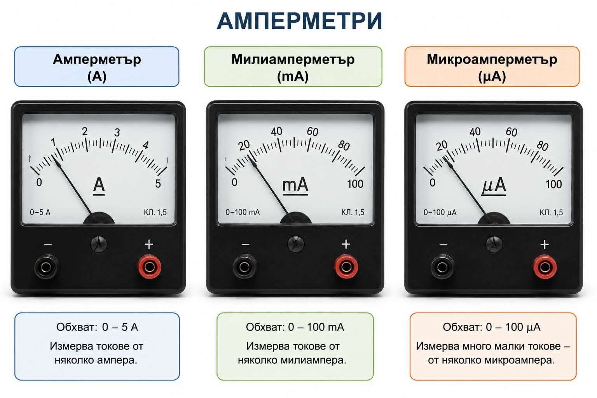

Електричен заряд и електричен ток
...Електричен ток - Начален преговор ... Начална страница на раздела... Начало на сайта...Тест №7

Зад.1. В коя част от атома са разположени протоните и в коя-електроните? Колко протона има електронеутрален атом със шест електрона?Кой химичен елемент има шест протона?
Зад.2. При какви условия атомите са електронеутрални?
Зад.3. Колко кулона е зарядът преминал за 8 секунди през напречното сечение на проводник, по който тече ток 6 А?
Зад.4. За 2 минути през напречното сечение на проводник преминава електричен заряд 60 С. Колко ампера е токът по проводника?
Зад.5. Какво представлява мерната единица АМПЕРЧАС? Мерна единица за: Справочник>>
Зад.6. Превърнете 1 амперчас в основната му мерна единица
Зад.7. Колко кулона и амперчаса е зарядът преминал през акумулатор на автомобил за 1 час и 30 минути, ако токът е 4 А?
